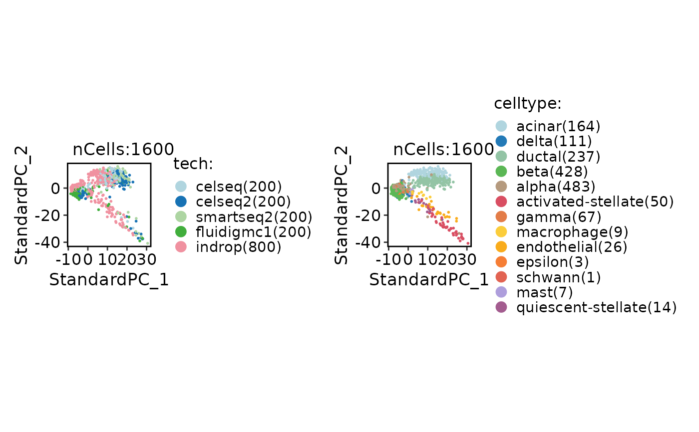
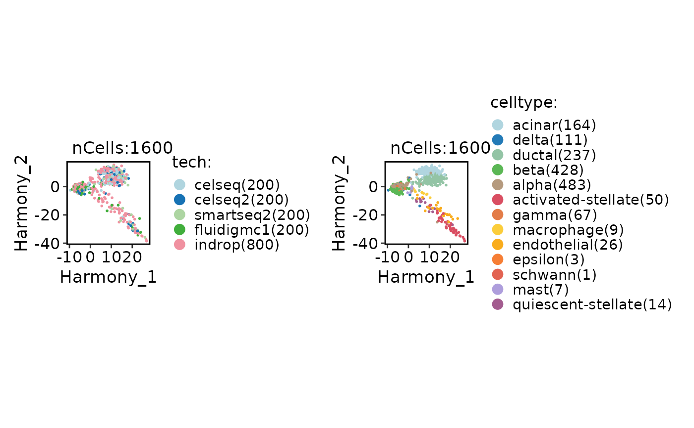
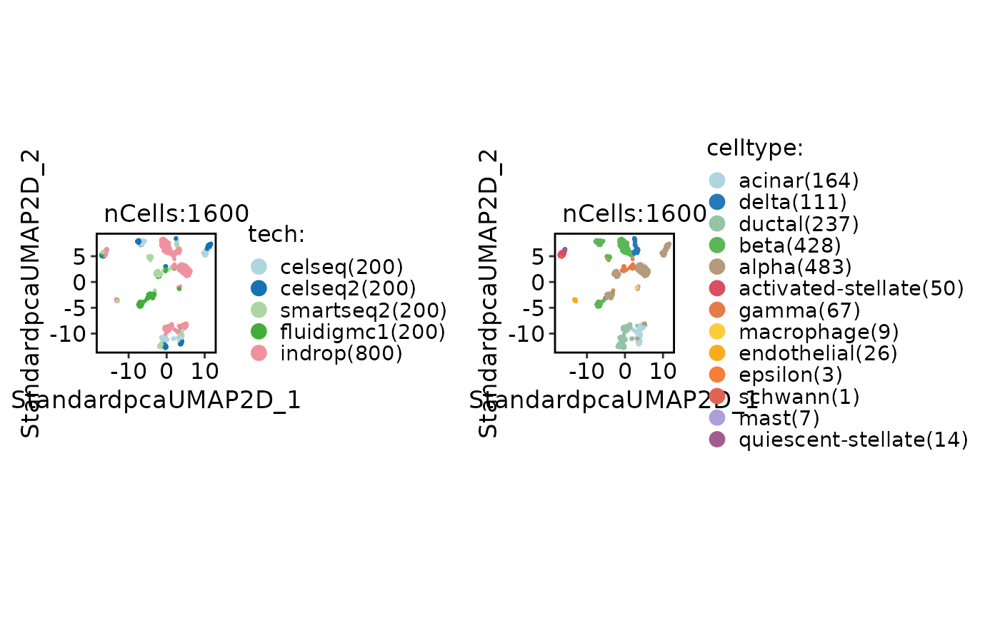
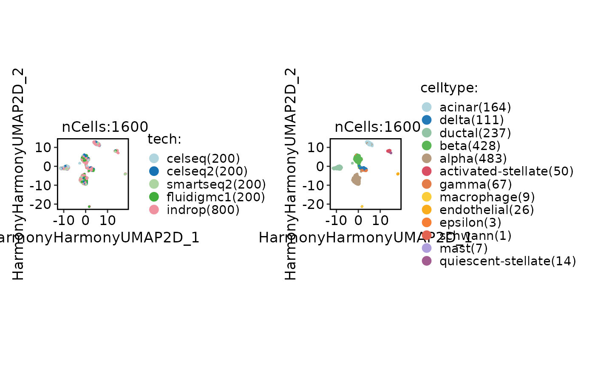

This is a modified version of harmony::RunHarmony specifically designed for compatibility with RunSymphonyMap.
Usage
RunHarmony2(object, ...)
# S3 method for class 'Seurat'
RunHarmony2(
object,
group.by.vars,
assay = NULL,
reduction = "pca",
dims.use = 1:30,
project.dim = TRUE,
reduction.name = "Harmony",
reduction.save = NULL,
reduction.key = "Harmony_",
verbose = TRUE,
seed.use = 11,
...
)Arguments
- object
A Seurat object.
- ...
Passed to harmony::RunHarmony.
- group.by.vars
The batch variable name.
- assay
Assay to use.
NULLuses the default assay.- reduction
Linear reduction used as input.
- dims.use
The dimensions to be used.
- project.dim
Whether to project dimension reduction loadings.
- reduction.name
Reduction to be stored in the Seurat object.
- reduction.save
Deprecated alias for
reduction.name, retained for compatibility withharmony::RunHarmony.Seurat.- reduction.key
The prefix for the column names of the Harmony embeddings.
- verbose
Whether to print the message. Default is
TRUE.- seed.use
Random seed.
Examples
Restored example output generated on 2026-10-12 from SCOP 083f5f31e. These historical examples have not been revalidated against the current release. Current usage and arguments are documented above.
data(panc8_sub)
panc8_sub <- RunStandardWorkflow(panc8_sub)
#> ℹ [2026-10-11 23:19:55] Start standard processing workflow...
#> ℹ [2026-10-11 23:19:55] Checking a list of <Seurat>...
#> ! [2026-10-11 23:19:55] Data 1/1 of the `srt_list` is "unknown"
#> ℹ [2026-10-11 23:19:55] Perform `NormalizeData()` with `normalization.method = 'LogNormalize'` on 1/1 of `srt_list`...
#> ℹ [2026-10-11 23:19:55] Perform `FindVariableFeatures()` on 1/1 of `srt_list`...
#> ℹ [2026-10-11 23:19:56] Use the separate HVF from `srt_list`
#> ℹ [2026-10-11 23:19:56] Number of available HVF: 2000
#> ℹ [2026-10-11 23:19:56] Finished check
#> ℹ [2026-10-11 23:19:56] Perform `ScaleData()`
#> ℹ [2026-10-11 23:19:56] Perform pca linear dimension reduction
#> ℹ [2026-10-11 23:19:56] Use stored estimated dimensions 1:26 for Standardpca
#> ℹ [2026-10-11 23:19:57] Perform `Seurat::FindClusters()` with `cluster_algorithm = 'louvain'` and `cluster_resolution = 0.6`
#> ℹ [2026-10-11 23:19:57] Reorder clusters...
#> ℹ [2026-10-11 23:19:57] Skip `log1p()` because `layer = data` is not "counts"
#> ℹ [2026-10-11 23:19:57] Perform umap nonlinear dimension reduction
#> ✔ [2026-10-11 23:20:05] Standard processing workflow completed
panc8_sub <- RunHarmony2(
panc8_sub,
group.by.vars = "tech",
reduction = "pca"
)
#> Transposing data matrix
#> Using automatic lambda estimation
#> Thetas: 2
#> Initializing state using k-means centroids initialization
#> Initializing centroids
#> Harmony 1/10
#> Harmony 2/10
#> Harmony 3/10
#> Harmony 4/10
#> Harmony 5/10
#> Harmony 6/10
#> Harmony 7/10
#> Harmony 8/10
#> Harmony 9/10
#> Harmony converged after 9 iterations
CellDimPlot(
panc8_sub,
group.by = c("tech", "celltype"),
reduction = "pca"
)

CellDimPlot(
panc8_sub,
group.by = c("tech", "celltype"),
reduction = "Harmony"
)

panc8_sub <- RunStandardWorkflow(
panc8_sub,
prefix = "Harmony",
linear_reduction = "Harmony"
)
#> ℹ [2026-10-11 23:20:55] Start standard processing workflow...
#> ℹ [2026-10-11 23:20:55] Checking a list of <Seurat>...
#> ℹ [2026-10-11 23:20:55] Data 1/1 of the `srt_list` has been log-normalized
#> ℹ [2026-10-11 23:20:55] Perform `FindVariableFeatures()` on 1/1 of `srt_list`...
#> ℹ [2026-10-11 23:20:56] Use the separate HVF from `srt_list`
#> ℹ [2026-10-11 23:20:56] Number of available HVF: 2000
#> ℹ [2026-10-11 23:20:56] Finished check
#> ℹ [2026-10-11 23:20:56] Perform `ScaleData()`
#> ℹ [2026-10-11 23:20:56] Perform Harmony linear dimension reduction
#> ℹ [2026-10-11 23:20:56] `linear_reduction` Harmony is already existed. Skip calculation
#> ℹ [2026-10-11 23:20:56] Use stored estimated dimensions 1:14 for HarmonyHarmony
#> ℹ [2026-10-11 23:20:56] Perform `Seurat::FindClusters()` with `cluster_algorithm = 'louvain'` and `cluster_resolution = 0.6`
#> ℹ [2026-10-11 23:20:56] Reorder clusters...
#> ℹ [2026-10-11 23:20:56] Skip `log1p()` because `layer = data` is not "counts"
#> ℹ [2026-10-11 23:20:56] Perform umap nonlinear dimension reduction
#> ✔ [2026-10-11 23:21:05] Standard processing workflow completed
CellDimPlot(
panc8_sub,
group.by = c("tech", "celltype"),
reduction = "StandardpcaUMAP2D"
)

CellDimPlot(
panc8_sub,
group.by = c("tech", "celltype"),
reduction = "HarmonyUMAP2D"
)
